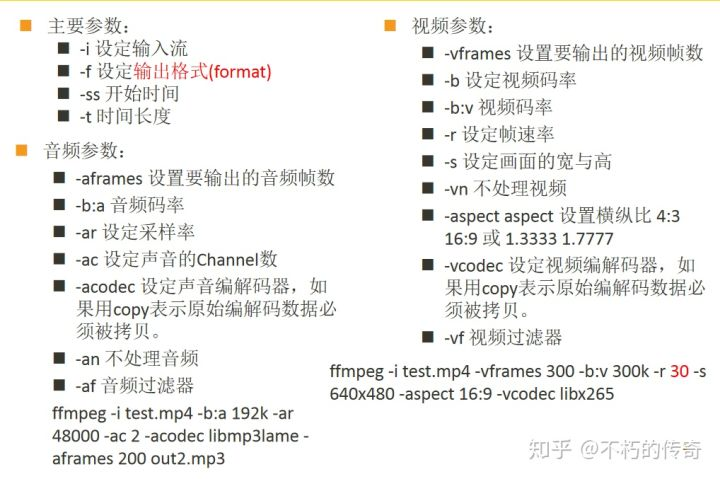

ffmpeg剪视频
一些结论
5800h转码h264速度是m3pro的60%，h265则快于m3pro,但视频体积更小。
crf越小画质越好，体积越大，对视频转码速度影响不大。
同等画质情况下，h265体积小于h264.
ffmpeg h264的crf默认值是23，h265的是28，两者画质近似。
使用显卡转码一定要设置-cq h264可以23 hevc（h265）设置28或者30，不然出来体积太大。
同等画质下cpu转码体积更小。
h264显卡速度略快于cpu 1.3x，h265显卡速度是cpu 4倍以上(3070laptop 5800H)。推荐使用显卡。
不计时间成本要最好效果，使用cpu转码h265，crf 22或者21，-preset slower或者veryslow。
英伟达显卡hevc随着cq变大，文件变小，画质变差，通常网课30-32都可以，40开始已经明显变差了。
h265视频，码率按照200kbps，60分钟，大小为：200 60 60 / 8 / 1024=87.89MB，所以根据文件大小，就能估算出来码率。
视频大小主要受编码格式影响，容器类型基本没有影响，但mkv比mp4略小可以忽略不记，对于没有字幕的网课视频，通常mp4较好，可以方便剪辑（pr等软件不支持mkv）。如果需要在容器内保存字幕，mkv较好。
推荐命令
音乐转码参数
最好加上音乐转码参数，不然就有可能被转为Vorbis ，影响速度。
1 | #无损 |
H264-cpu
其他选项
1 | # 使用gpu解码 |
超高清电影
1 | #最好效果 |
H265-cpu-还需要研究
1 | #示例：用x265转码，CRF模式，slow预设，音频转为2.0声道128kbps |
1 | #最好效果，太慢了，不推荐 |
H264-nvenc
1 | #默认版本 |
H265-nvenc
1 | #默认参数 似乎体积会变大(不推荐) |
纯显卡
1 | ffmpeg -hwaccel cuda -hwaccel_output_format cuda -i input.avi -y -c:v hevc_nvenc -cq 28 -c:a libfdk_aac ouput.mkv |
自己用过的
- 将1：50开始之后的100s内容输出
1 | ffmpeg -ss 1:05 -i clannad.mp4 -t 100 -c:v copy -c:a copy output.mp4 |
- 将00：20开始之后的内容输出
1 | ffmpeg -ss 00:20 -i clannad.mp4 -c:v copy -c:a copy output.mp4 |
- 字幕加入到视频
1 | ffmpeg -i input.mkv -i subtitles.srt -c copy output.mkv |
- 烧录像进字幕
1 | ffmpeg -i input.mkv -vf subtitles=subtitles.srt output.mkv |
- 提取字幕
1 | ffmpeg -i input.mkv output.srt |
- 显卡加速
1 | ffmpeg -i input.mkv output.mp4 |
- 这个时候可以考虑使用cpu解码而使用显卡加速编码
1 | ffmpeg -c:v hevc -i input.mp4 -c:v h264_qsv -b:v 2500k -bufsize 2500k output.mp4 |
- ffplay命令行播放视频
1 | ffplay input.avi |
- 查看视频信息
1 | ffprobe -i input.avi |
10.转码网课avi，没有压缩过的
1 | ffmpeg -hwaccel cuda -i input.avi -y -c:v hevc_nvenc -cq 28 -c:a libfdk_aac ouput.mkv |
11.纯显卡
1 | ffmpeg -hwaccel cuda -hwaccel_output_format cuda -i input.avi -y -c:v hevc_nvenc -cq 28 -c:a libfdk_aac ouput.mkv |
硬编码后缀解释
qsv：intel显卡的快速视频同步技术（quick sync video）nvenc：nvidia显卡的硬件视频编码器（nvidia hardware video encoder）cuvid：nvdec的旧称，只有解码端。cuda： 同上amf：amd显卡的amf硬件编码器（amd hardware encoder）
基本上所有的Intel 电脑都支持qsv方式。
各种剪视频方式对比
MP4
1 | 速度测试： |
mkv(比较快)
1 | 速度测试： |
不同格式速度
1 | ffmpeg -y -i 动态代理-01-日常生活中代理例子.avi -vcodec h264_nvenc 1.mp4 |
文件大小
1 | mkv:10044kb |
看起来mkv更好点 速度更快，体积更小。
硬件加速命令
1 | ffmpeg -hwaccel cuvid -c:v h264_cuvid -i input.mp4 -c:v h264_nvenc -b:v 2048k -s 1920x1080 output.mp4 |
常用命令参数解释
-hwaccel cuvid：使用cuvid进行硬件加速-c:v h264_cuvid：使用h264_cuvid进行解码-c:v h264_nvenc：使用h264_nvenc进行编码（nvidia硬件加速x265）-b:v 2000k：比特率，值越大约清晰。-s 1920x1080：分辨率-b:v 3500K：视频平均比特率为 3500K-bufsize 6000K：缓存区大小 6000K，建议设定为 当前码率帧率5，也许这里的2pass是针对缓冲区的，缓存未来5s-maxrate 5000K：最大码率为 5000K，每帧的最高码率不超过这个数值-preset slow：预设方案是 slow，slow已经是最好的选项了-pix_fmt p010le：输出的像素格式是 p010le 也就10bit，只有新的硬件支持，例如：970m不支持，1070可以支持
控制台播放视频：
ffmpeg -i badapple.mp4 -pix_fmt rgb24 -f caca /dev/stdout
相关信息
视频压制
视频的压制主要有 CRF（Constant Rate Factor，恒定率系数）与二压（2Pass）两种常用的方法，以及定限码率压制这种相对不常用的方法（不太推荐）
码率选择
难对“合适”的码率作出一个精确的定义。在这里，我只简单引用一下 Youtube 码率建议表供大家参考：
- 表中码率的推荐值基于 H.264 编码。
- 表中推荐高帧率视频使用同规格低帧率 1.5 倍的码率，而 HDR 使用 SDR 1.25 倍的码率。
| 规格 | 帧率 | 推荐码率（SDR） | 推荐码率（HDR） |
|---|---|---|---|
| 8K | 24~30 | 80 - 160 Mbps | 100 - 200 Mbps |
| 48~60 | 120 - 240 Mbps | 150 - 300 Mbps | |
| 4K (2160p) | 24~30 | 35 - 45 Mbps | 44 - 56 Mbps |
| 48~60 | 53 - 68 Mbps | 66 - 85 Mbps | |
| 2K (1440p) | 24~30 | 16 Mbps | 20 Mbps |
| 48~60 | 24 Mbps | 30 Mbps | |
| 1080p | 24~30 | 8 Mbps | 10 Mbps |
| 48~60 | 12 Mbps | 15 Mbps | |
| 720p | 24~30 | 5 Mbps | 6.5 Mbps |
| 48~60 | 7.5 Mbps | 9.5 Mbps |
Youtube 的音频码率推荐则为单声道 128 Kbps、环绕声 384 Kbps 以及 5.1 声道 512 Kbps.
基本命令
基本示例
1 | ffmpeg -y -i input.avi -vcodec h264_nvenc output.mp4 |
输出文件直接指定即可
参数
-i：输入文件。示例：input.mp4
-y:自动覆盖输出文件,不询问。-n:不覆盖输出文件,如果存在则退出。-b bitrate:视频/音频比特率,单位kbps。-b:a：用于设置音频流的比特率。比特率是指在单位时间内传输的比特数，通常以 kbps（千比特每秒）为单位。比特率越高，音频质量通常越好，但文件大小也会增加。示例：128k
-b:v：设置视频的目标码率为2500 kbps。示例：5000k，5M。
-c:a：指定音频编码器（例如
aac）。例如：copy（只复制不转码），aac（ffmpeg内置编码器），libfdk_aac（更优秀的aac编码器，官方没有libfdk_aac），ac3(DVD/BD中常用编码,也是aac)，flac（无损压缩的音频编码），libopus（在低码率下表现优异），libmp3lame(mp3编码器)。-c:v：指定视频编码器。例如：H.264(AVC) : libx264（cpu），h264_amf（AMD显卡），h264_nvenc（nvidia显卡），h264_qsv（intel核显）。H.265(HEVC) : libx265（cpu），hevc_amf（AMD显卡）， hevc_nvenc（nvidia显卡），hevc_qsv（intel核显）。AV1：libaom-av1/av1_nvenc （av1是 H.265 的免版税竞争者），libvpx/vp8_nvenc /vp9_nvenc （VP8/VP9 ：Google 开发的视频编码器，常用于 WebM 格式），
-vn：忽略视频流只处理音频。
-an：忽略音频流只处理视频。
-vbr：音频可变比特率，参数可以取值从 1 到 5，数字越大质量越高。示例：3
-crf：视频可变比特率（推荐使用），设置 CRF 值（视频质量），范围是 0（无损）到 51（最差）。h264中推荐使用19-23，推荐21。示例：21。
-bufsize ：设置缓冲区大小为2500 kbps，确保视频平稳输出。示例：2500k。
-hwaccel：用于启用硬件加速解码。选项：cuvid/nvdec （nvidia解码器），cuda （CUDA），qsv（intel核显），dxva2 （使用 Windows DirectX Video Acceleration），不指定默认是cpu。
-t duration:限定输入或输出时长,单位秒或时分秒格式。-to position:限定输出时长,单位秒或时分秒格式。-ss position:定位输入文件起始位置,单位秒或时分秒格式。-s size:指定视频尺寸大小,如360x240。最好是成倍数调整。-r fps:指定视频帧率。最好是成倍数调整-ar samplerate:音频采样率,如44100。-ac channels:音频通道数,如2。-reset:视频时间基准点重置。-shortest:按最短流长度进行处理。-copyinkf/-copyts:复制输入文件元数据及时间戳。-map:映射输入文件流到输出文件指定位置。-video_track_timescale:视频时间基数。-vsync cfr/vfr:视频同步模式。-profile:编码规范,如baseline/main/high等。-preset/tune:编码优化预设。-preset选项用于控制编码速度与压缩效率之间的平衡。通常，预设值可以让你在编码速度和输出视频质量之间做出选择。值越低，压缩效率越高，但编码时间越长；值越高，编码速度越快，但压缩效率可能较低。常见的-preset选项包括：-tune选项用于根据视频内容的特性进一步优化编码器的设置。常见的-tune选项包括：-qscale:固定尺寸编码,0-31值越低质量越高。-async:异步音视频处理。-filter_complex:添加视频过滤器处理链。-timecode/dump_extradata:时间码/编码参数嵌入。-metadata:元数据设置。-stats:统计信息。-hls_playlist:HLS播放列表生成。-〜ignore_unknown:忽略未知的流类型。-aspect:设置视频的屏幕高宽比。1
2
3
4
5通常使用的宽高比是：
16:9
4:3
16:10
5:4-threads:指定转码时用的cpu核心数量，模型为所有。推荐不设置。-hwaccel ：后面可以选择解码器。例子：cuda
-cq:英伟达转码推荐 28。
-cq 参数在 hevc_nvenc（和 h264_nvenc）编码中用于控制恒定质量。它的工作原理类似于 CRF，但具体实现和调整范围有所不同。
在大多数情况下，-cq 模式会更推荐一些，因为它能够保证恒定的视觉质量，可以通过简单地调整 QP 值来控制输出质量和文件大小。如果你对比特率限制有更严格的要求，可以尝试使用 -rc:v vbr_hq 模式，并结合合适的目标比特率和最大比特率设置。1
libx264 与 libx265 的 CRF 取值没有一一对应的公式。除了上文所述的无损参数均为 CRF=0、libx264 CRF=23 对应 libx265 CRF=28，其余 CRF 值并不存在对应关系。
英伟达显卡参数
-pq 注重感知质量，通过优化视觉效果来提升视频质量。
-cq 注重恒定质量，通过动态调整比特率来保持一致的视觉质量。
X264参数
preset
medium：默认的
veryslow：压片组常用
二压（2Pass）
通常只在强制要求文件大小时使用二压。
例子：
1 | # 对于 H.264 二压，使用 -pass 参数。请注意首行行尾的续行。 |
检查FFmpeg支持的硬件加速选项
1 | ffmpeg -hwaccels |
cuda
dxva2
qsv
d3d11va
列出可用的编码器
1 | ffmpeg configure -encoders |
列出可用的解码器
1 | ffmpeg configure -decoders |
查看FFmpeg支持的通信协议
1 | ffmpeg configure -protocols |
查看HEVC编码器用法
1 | ffmpeg -h encoder=hevc_nvenc |
实际测试
- 测试文件input.avi 98171kb （视频58522k，音频39649k）视频：tscc 音频：pcm 都是未压缩的
- 5800h 8核心16线程 32GB DDR4 3070laptop 固态硬盘
- ffmpeg6.1.1
仅提取视频
仅复制视频
1 | ffmpeg -i input.avi -c:v copy -an ouput-copy.mkv |
速度：无限大
大小：58522k
cpu压缩H264
1 | ffmpeg -i input.avi -an -y -c:v libx264 ouput—libx264.mkv |
速度：27.2x
大小：20353k
nvidia压缩H264
1 | ffmpeg -i input.avi -an -y -c:v h264_nvenc ouput—h264_nvenc.mkv |
速度：61.1x
大小：34407k
cpu压缩H265
1 | ffmpeg -i input.avi -an -y -c:v libx265 ouput—libx265.mkv |
速度：9.22x
大小：24747k
nvidia压缩H265
1 | ffmpeg -i input.avi -an -y -c:v hevc_nvenc ouput—hevc_nvenc.mkv |
速度：56.9x
大小：37532k
cpu压缩av1
1 | ffmpeg -i input.avi -an -y -c:v libaom-av1 ouput—libaom-av1.mkv |
速度：0.402x
大小：?
速度极慢，有问题
nvidia压缩av1
1 | ffmpeg -i input.avi -an -y -c:v av1_nvenc ouput—av1_nvenc.mkv |
速度：
大小：
不支持
cpu压缩vp9
1 | ffmpeg -i input.avi -an -y -c:v libvpx-vp9 ouput—libvpx-vp9.mkv |
速度：1.36x
大小：31584k
nvidia压缩vp9-不支持
结论
目前来说显卡和cpu对vp9和av1支持都不够好，高压缩比推荐h265，低压缩比推荐h264。并且需要修改预设。
常用编码器与参数 — FFmpeg 教程 文档 (wklchris.github.io)
仅提取音频
仅复制音频
1 | ffmpeg -i input.avi -c:a copy -vn ouput.pcm |
速度：无限大
大小：39180k
仅提取音频转为libfdk_aac
1 | ffmpeg -i input.avi -c:a libfdk_aac -vbr 3 -vn output-libfdkaac.m4a |
速度：291x
大小：5421k
仅提取音频转为aac
1 | ffmpeg -i input.avi -c:a aac -vn output-aac.m4a |
速度：59.5x
大小：8603k
ac3-同aac
flac
1 | ffmpeg -i input.avi -c:a flac -vn output-flac.flac |
速度：2350x
大小：16804k
libopus
1 | ffmpeg -i input.avi -c:a libopus output.opus |
速度：278x
大小：8016k
MP3-32kbps
1 | ffmpeg -i input.avi -c:a libmp3lame -vn output-aac.mp3 |
速度：285x
大小：3555k
结论
通常来说libfdk_aac比aac更好。推荐使用libfdk_aac，如果需要无损可以使用flac。
测试不同参数H264-cpu-仅提取视频
默认模式
1 | ffmpeg -i input.avi -an -y -c:v libx264 ouput—libx264.mkv |
速度：27.2x
大小：20353k
Bitrate(ABR 平均比特率模式)-不推荐
1 | ffmpeg -i input.avi -an -y -c:v libx264 -b:v 2000k ouput—libx264-bv2000k.mkv |
速度：29x
大小：56549k
CQP（恒定量化模式）-独显推荐
1 | #-q:v 值越小效果越好，22一般观感较好，推荐19-23，默认22 |
速度：26.6x
大小：20353k
恒定率系数（CRF）-cpu推荐
系数 -crf：对于常见的 8 bit H.264 视频， -crf 参数可以从 0（无损）到 51（最差压缩）取值，而默认值是 23。一般地，我们只选择 17~28 之间的数值：从视觉观感上，17 已经很接近无压缩的结果，更小的 crf 值徒增文件体积罢了。
22的观感已经不错了，对速度影响不大。
1 | ffmpeg -i input.avi -an -y -c:v libx264 -crf 22 ouput—libx264-crf22.mkv |
速度：29.3x
大小：21524k
推荐：-crf 22
测试-preset
默认是medium，速度：29x，大小20353k
slow，速度：21.2x，大小19803k
slower，速度：17.1x，大小17963k
veryslow，速度：9.51x，大小16180k
1 | #默认medium |
结论：对速度和大小都有影响。根据情况选择。
测试不同参数H264-nvidia-仅提取视频
对h264_nvenc来说 -crf是无效的。
默认
1 | ffmpeg -i input.avi -an -y -c:v h264_nvenc ouput—h264_nvenc.mkv |
速度：61.2x
大小：34407k
CQP（恒定量化模式）-独显推荐
默认：0，自动，看起来不用设置。
1 | #这个不能用，结果很差。体积很小 |
-qp 23，速度61.6x，大小15449k
-qp 22，速度61.8x，大小16288k
-qp 20，速度63x，大小18546k
推荐：21-22；
测试-preset
说明
1 | default 0 E..V....... |
默认是：medium,速度：61.4x，大小34407k：
1 | ffmpeg -i input.avi -an -y -c:v h264_nvenc -preset medium ouput—h264_nvenc-medium.mkv |
slow,速度：30.8x，大小32326k：
1 | ffmpeg -i input.avi -an -y -c:v h264_nvenc -preset slow ouput—h264_nvenc-slow.mkv |
p5,速度：45.5x，大小33865k：
1 | ffmpeg -i input.avi -an -y -c:v h264_nvenc -preset p5 ouput—h264_nvenc-p5.mkv |
p6,速度：42x，大小35268k：
1 | ffmpeg -i input.avi -an -y -c:v h264_nvenc -preset p6 ouput—h264_nvenc-p6.mkv |
p7,速度：40.4x，大小34406k：
1 | ffmpeg -i input.avi -an -y -c:v h264_nvenc -preset p7 ouput—h264_nvenc-p7.mkv |
测试不同参数H265-cpu-仅提取视频
默认
1 | ffmpeg -i input.avi -an -y -c:v libx265 ouput—libx265.mkv |
速度：10x
大小：24747k
恒定率系数（CRF）-cpu推荐
默认：-1，也就是28，越小越好。和h264的23质量差不多。
1 | ffmpeg -i input.avi -an -y -c:v libx265 -crf 28 ouput—libx265-crf28.mkv |
速度：10x
大小：24747k
1 | ffmpeg -i input.avi -an -y -c:v libx265 -crf 22 ouput—libx265-crf22.mkv |
速度：10x
大小：36493k
5800h转码h264速度是m3pro的60%，,但视频体积更小。
crf越小画质越好，体积越大，对视频转码速度影响不大。
同等情况下，h265体积小于h264.
测试-preset
默认是：medium,速度：10x，大小：24747k
1 | ffmpeg -i input.avi -an -y -c:v libx265 -preset medium ouput—libx265-medium.mkv |
slow,速度：，5.17x 大小20149k：
1 | ffmpeg -i input.avi -an -y -c:v libx265 -preset slow ouput—libx265-slow.mkv |
veryslow,速度：0.826x，大小17033k：
1 | ffmpeg -i input.avi -an -y -c:v libx265 -preset veryslow ouput—libx265-veryslow.mkv |
veryslow，太慢了。
推荐：不修改或者slow。
测试不同参数H265-nvidia-仅提取视频
默认
1 | ffmpeg -i input.avi -an -y -c:v hevc_nvenc ouput—hevc_nvenc.mkv |
速度：57.5x
大小：37532k
测试-cq -可以用22
高质量：-cq 在 18-24 之间
中等质量：-cq 在 24-28 之间
低质量：-cq 在 28-35 之间
15：和默认的很接近
1 | ffmpeg -i input.avi -an -y -c:v hevc_nvenc -cq 15 ouput—hevc_nvenc-cq15.mkv |
速度：*x
大小：36448k
21
1 | ffmpeg -i input.avi -an -y -c:v hevc_nvenc -cq 21 ouput—hevc_nvenc-cq21.mkv |
速度：53.5x
大小：27258k
23
1 | ffmpeg -i input.avi -an -y -c:v hevc_nvenc -cq 23 ouput—hevc_nvenc-cq23.mkv |
速度：55x
大小：24473k
28
1 | ffmpeg -i input.avi -an -y -c:v hevc_nvenc -cq 28 ouput—hevc_nvenc-cq28.mkv |
速度：55x
大小：18219k
35
1 | ffmpeg -i input.avi -an -y -c:v hevc_nvenc -cq 35 ouput—hevc_nvenc-cq35.mkv |
速度：
大小：18219k
41
1 | ffmpeg -i input.avi -an -y -c:v hevc_nvenc -cq 41 ouput—hevc_nvenc-cq41.mkv |
速度：
大小：18219k
50
1 | ffmpeg -i input.avi -an -y -c:v hevc_nvenc -cq 50 ouput—hevc_nvenc-cq50.mkv |
速度：
大小：18219k
CQP（恒定量化模式）- qp
默认：0，自动，看起来不用设置。
0,速度：57x,大小：57692k
1 | ffmpeg -i input.avi -an -y -c:v hevc_nvenc -qp 0 ouput—hevc_nvenc-qp0.mkv |
17,速度：57x,大小：22865k
1 | ffmpeg -i input.avi -an -y -c:v hevc_nvenc -qp 17 ouput—hevc_nvenc-qp17.mkv |
22,速度：63x,大小：17183k
1 | ffmpeg -i input.avi -an -y -c:v hevc_nvenc -qp 22 ouput—hevc_nvenc-qp22.mkv |
28,速度：57x,大小：12117k,这个和h264的23类似。
1 | ffmpeg -i input.avi -an -y -c:v hevc_nvenc -qp 28 ouput—hevc_nvenc-qp28.mkv |
测试-preset
默认是：medium（p4）,速度：57.7x，大小37532k：
1 | ffmpeg -i input.avi -an -y -c:v hevc_nvenc -preset medium ouput—hevc_nvenc-medium.mkv |
slow,速度：18.2x，大小29566k：
1 | ffmpeg -i input.avi -an -y -c:v hevc_nvenc -preset slow ouput—hevc_nvenc-slow.mkv |
p5,速度：46.4x，大小37127k：
1 | ffmpeg -i input.avi -an -y -c:v hevc_nvenc -preset p5 ouput—hevc_nvenc-p5.mkv |
p6,速度：24.4x，大小28895k：
1 | ffmpeg -i input.avi -an -y -c:v hevc_nvenc -preset p6 ouput—hevc_nvenc-p6.mkv |
p7,速度：21.9x，大小28489k：
1 | ffmpeg -i input.avi -an -y -c:v hevc_nvenc -preset p7 ouput—hevc_nvenc-p7.mkv |
混合-preset—qp 28
1 | ffmpeg -i input.avi -an -y -c:v hevc_nvenc -preset p7 -qp 28 ouput—hevc_nvenc-p7-qp28.mkv |
速度：21.7x
大小：9652k
混合-preset-p7-cq 28
1 | ffmpeg -i input.avi -an -y -c:v hevc_nvenc -preset p7 -cq 28 ouput—hevc_nvenc-p7-cp28.mkv |
速度：21.8x
大小：14697k
混合-preset-p5-cq 28
1 | ffmpeg -i input.avi -an -y -c:v hevc_nvenc -preset p5 -cq 28 ouput—hevc_nvenc-p5-cp28.mkv |
速度：46.7x
大小：17896k
M3Pro测试对比-新的文件110124k
默认
55.1x 5.8MB
-c:v libx264
51x 5.8MB
默认crf23
-c:v libx264 crf22
51.1x 6.2MB
-c:v libx265
8.89x 4.7MB
-c:v libx265 crf28
8.81x 4.7MB 默认是crf28
-c:v libx265 crf26
8.8x 5.4MB
-c:v libx265 crf28 slow
6.45x 4.6mb
-c:v libx265 crf28 veryslow
1.43x 4.3MB
对比人r9000p-2021 默认
1 | ffmpeg -i input.mp4 -an out.mkv |
34x 5596k
r9000p-2021 -c:v libx264
1 | ffmpeg -i input.mp4 -an -crf 22 out-libx264-crf22.mkv |
34.7x 6071k
r9000p-2021 -c:v libx265 crf28
1 | ffmpeg -i input.mp4 -an -c:v libx265 -crf 28 out-libx265-crf28.mkv |
10.9x 4592k
r9000p-2021 -c:v libx265 crf26
1 | ffmpeg -i input.mp4 -an -c:v libx265 -crf 26 out-libx265-crf26.mkv |
10.7x 5294k
r9000p-2021 -c:v libx265 crf24
1 | ffmpeg -i input.mp4 -an -c:v libx265 -crf 24 out-libx265-crf24.mkv |
10.7x 6144k
r9000p-2021 -c:v libx265 crf26 slow
1 | ffmpeg -i input.mp4 -an -c:v libx265 -crf 26 -preset slow out-libx265-crf26-slow.mkv |
6.36x 5262k
3070默认-h264_nvenc
1 | ffmpeg -i input.mp4 -an -c:v h264_nvenc out-h264_nvenc.mkv |
42.8x 15254k
3070-h264_nvenc-cq23
1 | ffmpeg -i input.mp4 -an -c:v h264_nvenc -cq 23 out-h264_nvenc-cq23.mkv |
42.7x 7816
3070-hevc_nvenc
1 | ffmpeg -i input.mp4 -an -c:v hevc_nvenc out-hevc_nvenc.mkv |
39.6x 18695k
3070-hevc_nvenc-cq28
1 | ffmpeg -i input.mp4 -an -c:v hevc_nvenc -cq 28 out-hevc_nvenc-cq28.mkv |
38.8k 6166k
总结：
5800h转码h264速度是m3pro的60%，h265则快于m3pro,但视频体积更小。
crf越小画质越好，体积越大，对视频转码速度影响不大。
同等情况下，h265体积小于h264.
使用显卡转码一定要设置-cq h264可以23 hevc（h265）设置28或者30，不然出来体积太大。
同等画质下cpu转码体积更小。
h264显卡速度略快于cpu 1.3x，h265显卡速度是cpu 4倍以上。推荐使用显卡。
其他测试
测试不同容器对结果影响
mp4
1 | ffmpeg -i input.mp4 -an -c:v hevc_nvenc -cq 28 out-mp41.mp4 |
mkv
1 | ffmpeg -i input.mp4 -an -c:v hevc_nvenc -cq 28 out-mkv1.mkv |
mp4: 6194k mkv:6166k
mp4: 20045k mkv:19972k
mp4: 605642k mkv:605274k
结论：视频大小主要受编码格式影响，容器类型基本没有影响，但mkv比mp4略小可以忽略不记，对于没有字幕的网课视频，通常mp4较好，可以方便剪辑。
测试帧数减半对画质影响
30
1 | ffmpeg -i input2.mp4 -an -c:v hevc_nvenc -cq 30 out-30.mkv |
6.88x 17402k
15
1 | ffmpeg -i input2.mp4 -an -c:v hevc_nvenc -cq 30 -r 15 out-15.mkv |
13.3x 12262k
结论：速度x2，且体积变小很多，可以考虑。
测试英伟达h265不同cq视频画质
cq 26
1 | ffmpeg -i input2.mp4 -an -c:v hevc_nvenc -cq 26 out-26.mkv |
13.1x 23271k
cq 28
1 | ffmpeg -i input2.mp4 -an -c:v hevc_nvenc -cq 28 out-28.mkv |
13.1x 19972k
cq 30
1 | ffmpeg -i input2.mp4 -an -c:v hevc_nvenc -cq 30 out-30.mkv |
13.1x 17402k
cq 32
1 | ffmpeg -i input2.mp4 -an -c:v hevc_nvenc -cq 32 out-32.mkv |
13x 15174k
cq 36
1 | ffmpeg -i input2.mp4 -an -c:v hevc_nvenc -cq 36 out-36.mkv |
13x 11553k
cq 40
1 | ffmpeg -i input2.mp4 -an -c:v hevc_nvenc -cq 40 out-40.mkv |
13x 8574k
cq 44
1 | ffmpeg -i input2.mp4 -an -c:v hevc_nvenc -cq 44 out-44.mkv |
13x 6483k
cq 50
1 | ffmpeg -i input2.mp4 -an -c:v hevc_nvenc -cq 50 out-50.mkv |
13x 4041k
结论：随着cq变大，文件变小，画质变差，通常网课30-32都可以，40开始已经明显变差了
提取不同格式音频
默认的见过的音乐格式
1 | 352 kb/s (pcm_s16le (native) -> vorbis (libvorbis)) 44.2kbits/s |
m4a默认
aac (native) bitrate= 77.5kbits/s speed=58.4x
bitrate= 129.3kbits/s speed=43.9x
ogg 默认:
vorbis 77.4kbits/s speed=76.4x
vorbis 44.2kbits/s speed= 231x
总结
vorbis 的码率会随输入自动变化
aac好像默认是大部分情况是128kbps，也会随输入自动选择码率，但是有可能输出码率大于输入的。
aac自动选择的码率往往大于vorbis
测试-hwaccel_output_format cuda
默认的cq约为11
不加
1 | ffmpeg -hwaccel cuda -i input.mp4 -an -y -c:v hevc_nvenc ouput—hevc_nvenc.mkv |
速度：13.3x
大小：99222kB
加
1 | ffmpeg -hwaccel cuda -hwaccel_output_format cuda -i input.mp4 -an -y -c:v hevc_nvenc ouput—hevc_nvenc-cuda-hwaccel_output_format.mkv |
速度：13.3x
大小：99222kB
不加-cq 28
1 | ffmpeg -hwaccel cuda -i input.mp4 -an -y -c:v hevc_nvenc -cq 28 ouput—hevc_nvenc.mkv |
速度：13x
大小：50594k
加-cq 28
1 | ffmpeg -hwaccel cuda -hwaccel_output_format cuda -i input.mp4 -an -y -c:v hevc_nvenc -cq 28 ouput—hevc_nvenc-cuda-hwaccel_output_format.mkv |
速度：13.1x
大小：50594k
结论：hwaccel_output_format 似乎对结果没有影响。
测试和i5-7300对比5800h
1 | ffmpeg -i input.avi -an -y -c:v libx264 ouput—libx264.mkv |
7300：
速度：10.5x
大小：19552k
5800h：
速度：25.2x
大小：20353k
结论：5800h是7300的2.5倍
测试1050laptop和3070laptop速度对比
1 | ffmpeg -i input.avi -an -y -c:v hevc_nvenc ouput—hevc_nvenc.mkv |
1050laptop无法运行
结论：
7300核显速度测试
1 | ffmpeg -i input.avi -an -y -c:v h264_qsv ouput—h264_qsv.mkv |
大小：18766k
速度：26.7x
结论：7300核显还是很快的。
测试显卡解码，显卡转码
1 | #cpu解码 |
cpu解码：
速度：56.4x
大小：34407
cuda解码：
速度：62.3x
大小：34407
纯显卡 解码后不回到内存。
速度：62.9x
大小：34407
结论：对大小没有影响，对速度影响不大，纯显卡可以节省一点cpu，推荐使用cuda/nvdec/cpu。（速度之间差距都是误差）
测试cpu核心影响
1 | #多线程 |
多线程：
速度25.8x
单线程：
速度5.84x
大小：单线程略小。
结论：不要修改线程数量，使用默认即可。
使用相同命令重复转码
1 | ffmpeg -y -i input.avi -vcodec h264_nvenc output.mp4 |
现象：第二次转码速度变快，但是视频体积没有显著缩小（略微缩小），基本没有意义，所有不要这样做，虽然对结果影响不大。
使用最新的ffmpeg然后用nvidia显卡时Driver does not support the required nvenc API version. Required: 12.2 Found: 12.1。
解决：使用不那么新的ffmpeg编译版本。如从7.0.1转到6.1.1。推荐使用稳定版本包括libfdk_aac。
不同容器装相同东西结果
1 | ffmpeg -i input.avi -c:v h264_nvenc -an ouput.mkv |
ouput.mkv 34407k
1 | Input #0, avi, from 'input.avi': |
output.mp4 47148k
1 | Input #0, avi, from 'input.avi': |
结论：
MKV 格式的输出（output.mkv）在编码过程中没有产生重复帧，文件大小较小，比特率也较低。
MP4 格式的输出（output.mp4）在编码过程中产生了大量重复帧，导致文件大小和比特率相对较高。
MKV 更加灵活和宽容时间戳的误差，因此在处理过程中没有产生重复帧，而 MP4 格式可能对时间戳要求更严格，导致在处理过程中产生了大量重复帧。所以更推荐使用mkv格式。
下载
很多二进制版本
FFmpeg Binaries (animmouse.com)
不稳定版本包括libfdk_aac
Release 2024-07-14 12:32 4e0e872 · AnimMouse/ffmpeg-autobuild (github.com)
稳定版本包括libfdk_aac
官方构建
BtbN/FFmpeg-Builds (github.com)
ffplay命令播放媒体
播放本地文件
ffplay -window_title “test time” -ss 2 -t 10 -autoexit test.mp4
ffplay buweishui.mp3
播放网络流
ffplay -window_title “rtmp stream” rtmp://202.69.69.180:443/webcast/bshdlive-pc
强制解码器
mpeg4解码器：ffplay -vcodec mpeg4 test.mp4
h264解码器：ffplay -vcodec h264 test.mp4
禁用音频或视频
禁用音频：ffplay test.mp4 -an
禁用视频：ffplay test.mp4 -vn
播放YUV数据
ffplay -pixel_format yuv420p -video_size 320x240 -framerate 5 yuv420p_320x240.yuv
播放RGB数据
ffplay -pixel_format rgb24 -video_size 320x240 -i rgb24_320x240.rgb
ffplay -pixel_format rgb24 -video_size 320x240 -framerate 5 -i rgb24_320x240.rgb
播放PCM数据
ffplay -ar 48000 -ac 2 -f f32le 48000_2_f32le.pcm
-ar set audio sampling rate (in Hz) (from 0 to INT_MAX) (default 0)
-ac set number of audio channels (from 0 to INT_MAX) (default 0)
ffplay简单过滤器
视频旋转
ffplay -i test.mp4 -vf transpose=1
视频反转
ffplay test.mp4 -vf hflip
ffplay test.mp4 -vf vflip
视频旋转和反转
ffplay test.mp4 -vf hflip,transpose=1
音频变速播放
ffplay -i test.mp4 -af atempo=2
视频变速播放
ffplay -i test.mp4 -vf setpts=PTS/2
音视频同时变速
ffplay -i test.mp4 -vf setpts=PTS/2 -af atempo=2
ffmpeg命令参数说明

ffmpeg命令 提取音视频数据
保留封装格式
ffmpeg -i test.mp4 -acodec copy -vn audio.mp4
ffmpeg -i test.mp4 -vcodec copy -an video.mp4
提取视频
保留编码格式：ffmpeg -i test.mp4 -vcodec copy -an test_copy.h264
强制格式：ffmpeg -i test.mp4 -vcodec libx264 -an test.h264
提取音频
保留编码格式：ffmpeg -i test.mp4 -acodec copy -vn test.aac
强制格式：ffmpeg -i test.mp4 -acodec libmp3lame -vn test.mp3
ffmpeg命令提取像素格式和PCM数据
ffmpeg命令提取像素格式
提取YUV
提取3秒数据，分辨率和源视频一致
ffmpeg -i test_1280x720.mp4 -t 3 -pix_fmt yuv420p yuv420p_orig.yuv
提取3秒数据，分辨率转为320x240
ffmpeg -i test_1280x720.mp4 -t 3 -pix_fmt yuv420p -s 320x240 yuv420p_320x240.yuv
提取RGB
提取3秒数据，分辨率转为320x240
ffmpeg -i test.mp4 -t 3 -pix_fmt rgb24 -s 320x240 rgb24_320x240.rgb
RGB和YUV之间的转换
ffmpeg -s 320x240 -pix_fmt yuv420p -i yuv420p_320x240.yuv -pix_fmt rgb24 rgb24_320x240_2.rgb
提取PCM
ffmpeg -i buweishui.mp3 -ar 48000 -ac 2 -f s16le 48000_2_s16le.pcm
ffmpeg -i buweishui.mp3 -ar 48000 -ac 2 -sample_fmt s16 out_s16.wav
ffmpeg -i buweishui.mp3 -ar 48000 -ac 2 -codec:a pcm_s16le out2_s16le.wav
ffmpeg -i buweishui.mp3 -ar 48000 -ac 2 -f f32le 48000_2_f32le.pcm
ffmpeg -i test.mp4 -t 10 -vn -ar 48000 -ac 2 -f f32le 48000_2_f32le_2.pcm
ffmpeg命令转封装
ffmpeg命令转封装
保持编码格式：
ffmpeg -i test.mp4 -vcodec copy -acodec copy test_copy.ts
ffmpeg -i test.mp4 -codec copy test_copy2.ts
改变编码格式：
ffmpeg -i test.mp4 -vcodec libx265 -acodec libmp3lame out_h265_mp3.mkv
修改帧率：
ffmpeg -i test.mp4 -r 15 -codec copy output.mp4 (错误命令)
ffmpeg -i test.mp4 -r 15 output2.mp4
修改视频码率：
ffmpeg -i test.mp4 -b 400k output_b.mkv （此时音频也被重新编码）
修改视频码率：
ffmpeg -i test.mp4 -b:v 400k output_bv.mkv
修改音频码率：
ffmpeg -i test.mp4 -b:a 192k output_ba.mp4
如果不想重新编码video，需要加上-vcodec copy
修改音视频码率：
ffmpeg -i test.mp4 -b:v 400k -b:a 192k output_bva.mp4
修改视频分辨率：
ffmpeg -i test.mp4 -s 480x270 output_480x270.mp4
修改音频采样率:
ffmpeg -i test.mp4 -ar 44100 output_44100hz.mp4
ffmpeg命令过滤器
生成测试文件
找三个不同的视频每个视频截取10秒内容
ffmpeg -i 沙海02.mp4 -ss 00:05:00 -t 10 -codec copy 1.mp4
ffmpeg -i 复仇者联盟3.mp4 -ss 00:05:00 -t 10 -codec copy 2.mp4
ffmpeg -i 红海行动.mp4 -ss 00:05:00 -t 10 -codec copy 3.mp4
如果音视频格式不统一则强制统一为 -vcodec libx264 -acodec aac
将上述1.mp4/2.mp4/3.mp4转成ts格式
ffmpeg -i 1.mp4 -codec copy -vbsf h264_mp4toannexb 1.ts
ffmpeg -i 2.mp4 -codec copy -vbsf h264_mp4toannexb 2.ts
ffmpeg -i 3.mp4 -codec copy -vbsf h264_mp4toannexb 3.ts
转成flv格式
ffmpeg -i 1.mp4 -codec copy 1.flv
ffmpeg -i 2.mp4 -codec copy 2.flv
ffmpeg -i 3.mp4 -codec copy 3.flv
分离某些封装格式（例如MP4/FLV/MKV等）中的H.264的时候，需要首先写入SPS和PPS，否则会导致分离出来的数据没有SPS、PPS而无法播放。H.264码流的SPS和PPS信息存储在AVCodecContext结构体的extradata中。需要使用ffmpeg中名称为“h264_mp4toannexb”的bitstream filter处理
开始拼接文件
以MP4格式进行拼接
方法1：ffmpeg -i “concat:1.mp4|2.mp4|3.mp4” -codec copy out_mp4.mp4
方法2：ffmpeg -f concat -i mp4list.txt -codec copy out_mp42.mp4
以TS格式进行拼接
方法1：ffmpeg -i “concat:1.ts|2.ts|3.ts” -codec copy out_ts.mp4
方法2：ffmpeg -f concat -i tslist.txt -codec copy out_ts2.mp4
以FLV格式进行拼接
方法1：ffmpeg -i “concat:1.flv|2.flv|3.flv” -codec copy out_flv.mp4
方法2：ffmpeg -f concat -i flvlist.txt -codec copy out_flv2.mp4
方法1只适用部分封装格式，比如TS
建议：
（1）使用方法2进行拼接
（2）转成TS格式再进行拼接
测试不同编码拼接
修改音频编码
ffmpeg -i 2.mp4 -vcodec copy -acodec ac3 -vbsf h264_mp4toannexb 2.ts
ffmpeg -i “concat:1.ts|2.ts|3.ts” -codec copy out1.mp4 结果第二段没有声音
修改音频采样率
ffmpeg -i 2.mp4 -vcodec copy -acodec aac -ar 96000 -vbsf h264_mp4toannexb 2.ts
ffmpeg -i “concat:1.ts|2.ts|3.ts” -codec copy out2.mp4 第二段播放异常
修改视频编码格式
ffmpeg -i 1.mp4 -acodec copy -vcodec libx265 1.ts
ffmpeg -i “concat:1.ts|2.ts|3.ts” -codec copy out3.mp4
修改视频分辨率
ffmpeg -i 1.mp4 -acodec copy -vcodec libx264 -s 800x472 -vbsf h264_mp4toannexb 1.ts
ffmpeg -i “concat:1.ts|2.ts|3.ts” -codec copy out4.mp4
注意：
把每个视频封装格式也统一为ts，拼接输出的时候再输出你需要的封装格式，比如MP4
视频分辨率可以不同，但是编码格式需要统一
音频编码格式需要统一，音频参数(采样率/声道等)也需要统一
fmpeg命令图片与视频互转
截取一张图片
ffmpeg -i test.mp4 -y -f image2 -ss 00:00:02 -vframes 1 -s 640x360 test.jpg
ffmpeg -i test.mp4 -y -f image2 -ss 00:00:02 -vframes 1 -s 640x360 test.bmp
-i 输入
-y 覆盖
-f 格式 image2 一种格式
-ss 起始值
-vframes 帧 如果大于1 那么 输出加%03d test%03d.jpg
-s 格式大小size
转换视频为图片（每帧一张图):
ffmpeg -i test.mp4 -t 5 -s 640x360 -r 15 frame%03d.jpg
图片转换为视频:
ffmpeg -f image2 -i frame%03d.jpg -r 25 video.mp4
从视频中生成GIF图片
ffmpeg -i test.mp4 -t 5 -r 1 image1.gif
ffmpeg -i test.mp4 -t 5 -r 25 -s 640x360 image2.gif
将 GIF 转化为 视频
ffmpeg -f gif -i image2.gif image2.mp4
参考
ffmpeg可支持的编码器、解码器、封装格式、网络协议_Ternence_Hsu的博客-CSDN博客
FFMPEG命令入门到提高，一篇文章就够了 - 知乎 (zhihu.com)
[FFmpeg] Windows下使用ffmpeg为视频添加字幕_SunrayME的专栏-CSDN博客_ffmpeg添加字幕
使用 FFmpeg 为视频添加字幕 - Hello World (jdjx.run)
FFmpeg 教程 — FFmpeg 教程 文档 (wklchris.github.io)
NVIDIA NVENC编码器 OBS 指南-腾讯云开发者社区-腾讯云 (tencent.com)
NVIDIA FFmpeg Transcoding Guide | NVIDIA Technical Blog
rigaya/NVEnc: NVENCによる高速エンコードの性能実験 (github.com)
https://docs.nvidia.com/video-technologies/video-codec-sdk/11.1/ffmpeg-with-nvidia-gpu/index.html